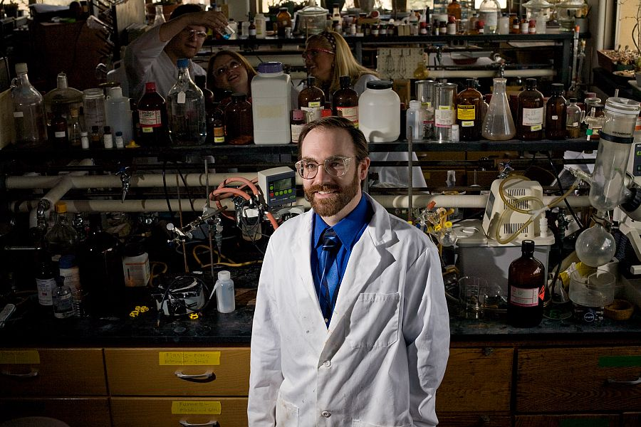

This is Scott Bur. He teaches Chemistry at Gustavus Adolphus College and seems like a good guy. I see him down at Patrick’s for trivia sometimes. His beard comes and goes, but I think I like the bearded Bur better than the non-bearded version.
Assistant Professor, Chemistry, Gustavus Adolphus College ƒ/8.0, 1/200 s, 100 ISO
Assistant Professor, Chemistry, Gustavus Adolphus College ƒ/8.0, 1/200 s, 100 ISO


9 Comments
July 16th, 2008 at 5:47 am
I think you should do something with light on your portrait photos. Take a look at all those portraits you made in last couple of months. Half of the subject’s face is always excessively lightened. I guess you place flash on the floor to light subject’s face from below. Maybe you need to use some kind of diffuser?
July 16th, 2008 at 6:50 am
@lxa: Thanks for the feedback. On these photos, I was actually using a flash that was on a stand as high as I could make it go (it was touching the ceiling) which you can tell by the direction of the shadows. And, I shot it through a white umbrella to diffuse it. Placing it closer to Scott would have given me a more diffused shadow, but I wanted to use some nice, crisp shadows in his lab coat.
July 16th, 2008 at 1:22 pm
I actually like these portraits a lot. The bright flash does give the image an unreal atmosphere, as if we’re looking at manequins almost, but it also makes the people stand out from their surroundings, a lot. It’s like saying: I photograph these people because of their background, or job, or where I know them from (work, whatever), but I want to focus in great detail on how they look…
Another way of putting this would be: I just like these a lot.
July 16th, 2008 at 1:32 pm
Thanks Nils, interesting insights.
For this photo in particular, I lit Scott so brightly compared to his surroundings mainly because I wanted the focus to be drawn a lot to the subject of the photo (Scott) while muting the chaos of the room. Additionally, in the shots where you can see out of the windows, I wanted to bring up the light levels to a point where you could actually see some detail out there instead of simply having them completely blown out. For people who are familiar with the campus, this is an especially nice touch.
July 16th, 2008 at 5:41 pm
I really like the pictures I’ve seen so far for this project! This one is cool because all of the clutter in the background really makes the subject and his coat stand out. And I enjoy the enthusiastic students in the back too. That’s how happy chemistry lab makes me. Kind of.
July 16th, 2008 at 9:57 pm
Thanks Beth The students were good sports. I told them to hang out in the back row and look like they were doing chemistry stuff. Then they started working on an experiment or something and were authentically enthusiastic about it which is what makes it work so well.
The students were good sports. I told them to hang out in the back row and look like they were doing chemistry stuff. Then they started working on an experiment or something and were authentically enthusiastic about it which is what makes it work so well.
Scott wanted to have students in his photo because he says that they are the ones that do all of the hard work.
July 21st, 2008 at 10:36 am
Fabulous photo, fabulous professor.
It really is amazing that you were able to make your subject the focus with all the crazy stuff in the room. You have to tell me your secret sometime.
September 10th, 2008 at 11:13 am
two great shots, excellent lighting, love his expression too.
April 28th, 2011 at 12:08 pm
Great picture, thanks! I was looking for a good picture of a chem professor in his/her lab, and this is perfect.